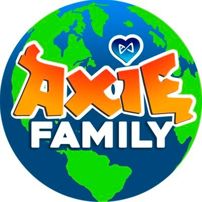

Axie Infinity es uno de los primeros juegos desarrollados aprovechando la tecnología de la blockchain. Esta permite que los jugadores sean recompensados por su tiempo dentro del juego a través de criptomonedas, lo cual es muy atractivo tanto para ávidos jugadores como para inversores. Pero el necesitar de 3 NFTs para poder ingresar al juego significa un gasto inicial de cientos de dolares solo para poder a comenzar a jugar. Es aquí donde aparecen las BECAS.
¿CÓMO FUNCIONAN?
Aquellos inversores o jugadores con capital suficiente pueden armar equipos que, en lugar de jugar por su cuenta, prestan a otros jugadores sin el dinero para la inversión inicial, y luego repartir las ganancias. Es el becario o manager quien establece las condiciones, pero las becas suelen ofrecer a los jugadores entre 30% y 50% de las ganancias de cada quincena.
Es importante recordar que Sky Mavis aclara estrictamente que un jugador no puede jugar en más de una cuenta (en un período de 24hs). Por lo que ni un becado puede aplicar a más de una, ni jugar en otra cuenta propia, ni los managers pueden jugar en una beca ya sea propia o no, lo cual es otro motivo para que un jugador experimentado decida prestar equipos.
¿CÓMO CONSIGO UNA?
Para conseguir una beca deberás encontrar a algún manager en necesidad de jugadores. Esto lo puedes conseguir a través de canales de Discord. Por ejemplo, en el servidor oficial de Axie Infinity existe un canal dedicado a gente en busca de becas y gente en busca de jugadores. Así mismo, existen guilds encargadas de ofrecer becas a la comunidad (hablaremos de ellas en un momento).
De cualquier forma, recuerda que en general los becarios están en busca de jugadores experimentados, ya sea en Axie u otroa jueos de estrategia/cartas. Ten en cuenta los requisitos mínimos de quien está ofreciendo un equipo. Además ten mucho cuidado al postularte a una: recuerda que NADIE va a pedirte información sensible como contraseñas o frase semilla de alguna billetera de criptomonedas. Por favor nunca compartas dicha información, y en caso de que te lo pidan, ten por seguro que se trata de una estafa.
GUILDS
Existen grupos de gente dedicada a ofrecer becas a jugadores que demuestren su valía en el ranking. Si has alcanzado puestos altos en el ladder de Axie Infinity, puedes aplicar a distintos equipos y organizaciones dedicados a ofrecer becas y equipos competitivos para jugadores que quieren pasar al siguiente nivel. Por lo general cuentan con una lista de espera donde te puedes anotar y, siempre que cumplas sus requisitos, eventualmente entrar para representar al equipo en la Arena.
Pure GG
T2 Latam
Metat8

Axie Fam
¿CÓMO ARMO MIS BECAS?
Para armar tus propias becas, deberás tener primero tu cuenta de Ronin. necesitas instalar la extensión de la billetera desde la página oficial de Axie o este LINK. Esta es la billetera que usarás en el Marketplace para comprar y vender Axies. *NUNCA descargues nada relacionado con crypto desde un lugar que no sea el oficial.
ejemplo
Luego deberás crear las "subcuentas" de Ronin, qué serán las que den acceso a tus becados al juego. Cada subcuenta requiere de una dirección de mail y contraseña únicos, que serán los datos que compartirás con el jugador. Ellos tendrán acceso al juego y el Marketplace de Axie, pero no tendrán el acceso a la billetera, por lo que no podrán realizar acciones como comprar/vender Axies.
ejemplo
Una vez que tengas tu billetera y la cuenta para el becado listas, solo te queda comprar los Axies que quieras y enviarlos a la subcuenta correspondiente. También puedes enviar los fondos a la subcuenta y realizar la compra de los Axies desde esa dirección.
NUESTRAS BECAS
Desde Axie101 ofrecemos nuestras propias becas a aquellos jugadores que cumplan con los requisitos específicados. Nos encargamos de mantener actualizados los equipos de nuestros becados y un porcentaje que creemos justo según las condiciones establecidas. Esperamos tu postulación!
REQUISITOS
Experiencia en Axie u otros juegos de cartas/estrategia.
PC/Dispositivo Móvil disponible para jugar.
Disponibilidad de tiempo para completar la misión diaria y gastar la energía en pvp.
Cuenta de Binance.
No estar jugando en otra cuenta de Axie.
Buen manejo de inglés
CONDICIONES
Mínimo 150slp por día.
Pagos cada 14 días, del 50%.
asdasd
Capacitaciones constantes con nuestros coach.
Equipos competitivos.
En caso de mantenerse en copas altas, puede aplicar a 40 energías.